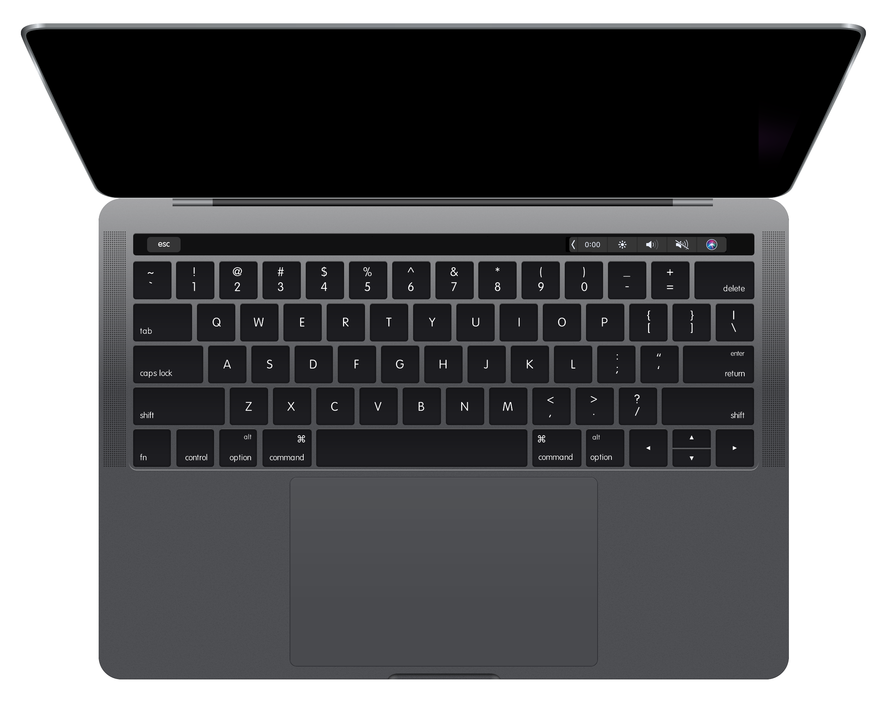

<DOCTYPE html>
<html>
  <head>
    <!-- From http://www.favicomatic.com/ -->
    <link rel="icon" type="image/png" href="./favicon-32x32.png" sizes="32x32" />
    <link rel="icon" type="image/png" href="./favicon-16x16.png" sizes="16x16" />

    <script src="https://cdn.jsdelivr.net/npm/canvas-confetti@0.0.3/dist/confetti.browser.min.js"></script>
    <link href="https://fonts.googleapis.com/css?family=Source+Sans+Pro:300,400" rel="stylesheet">
    <link rel="stylesheet" href="./style.css">
    <script src="./index.js"></script>
  </head>
  <body>
    <div class='banner-image-container'>
      
      <div id='timer'
        onmousedown='mdown()'
        onmouseup='mup()'
        oncontextmenu='cmenu()'
        class='banner-image-timer'
      >
        0:00
      </div>
    </div>
    <div class='text-container'>
      <h1 id='title'>Touch Bar Timer</h1>
      <p id='subtitle'>A little stopwatch for your Mac's touch bar.</p>
      <ul>
        <li id='li-1'>
          <strong>Tap</strong> to start and stop.
        </li>
        <li id='li-2'>
          <strong>Hold</strong> to reset.
        </li>
        <li id='li-3'>
          <strong>Long hold</strong> to customize.
        </li>
      </ul>
      <div>
        <button>Download</button>
      </div>
    </div>
    <div class='footer-container'>
      <p>
        v1.0.0
        · by <a target="_blank" href="https://twitter.com/alexzirbel">Alex Zirbel</a>
        · code on <a target="_blank" href="https://github.com/azirbel/touch-bar-timer">GitHub</a>
        · with thanks to <a target="_blank" href="https://github.com/pixel-point/mute-me">Pixel Point</a>
      </p>
    </div>
  </body>
</html>
